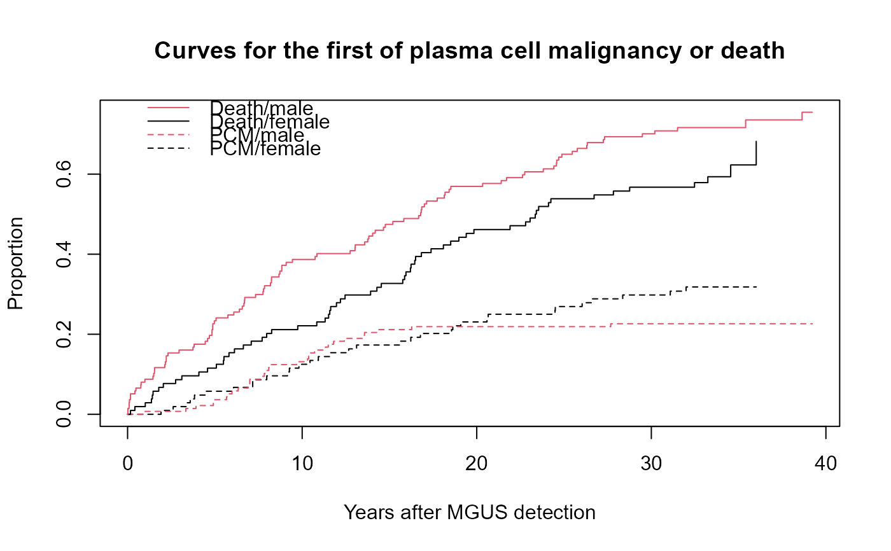

Monoclonal gammopathy data
mgus.RdNatural history of 241 subjects with monoclonal gammopathy of undetermined significance (MGUS).
Usage
mgus
mgus1
data(cancer, package="survival")Format
mgus: A data frame with 241 observations on the following 12 variables.
| id: | subject id |
| age: | age in years at the detection of MGUS |
| sex: | male or female |
| dxyr: | year of diagnosis |
| pcdx: | for subjects who progress to a plasma cell malignancy |
| the subtype of malignancy: multiple myeloma (MM) is the | |
| most common, followed by amyloidosis (AM), macroglobulinemia (MA), | |
| and other lymphprolifative disorders (LP) | |
| pctime: | days from MGUS until diagnosis of a plasma cell malignancy |
| futime: | days from diagnosis to last follow-up |
| death: | 1= follow-up is until death |
| alb: | albumin level at MGUS diagnosis |
| creat: | creatinine at MGUS diagnosis |
| hgb: | hemoglobin at MGUS diagnosis |
| mspike: | size of the monoclonal protein spike at diagnosis |
mgus1: The same data set in start,stop format. Contains the id, age, sex, and laboratory variable described above along with
| start, stop: | sequential intervals of time for each subject |
| status: | =1 if the interval ends in an event |
| event: | a factor containing the event type: censor, death, or plasma cell malignancy |
| enum: | event number for each subject: 1 or 2 |
Details
Plasma cells are responsible for manufacturing immunoglobulins, an important part of the immune defense. At any given time there are estimated to be about \(10^6\) different immunoglobulins in the circulation at any one time. When a patient has a plasma cell malignancy the distribution will become dominated by a single isotype, the product of the malignant clone, visible as a spike on a serum protein electrophoresis. Monoclonal gammopathy of undertermined significance (MGUS) is the presence of such a spike, but in a patient with no evidence of overt malignancy. This data set of 241 sequential subjects at Mayo Clinic was the groundbreaking study defining the natural history of such subjects. Due to the diligence of the principle investigator 0 subjects have been lost to follow-up.
Three subjects had MGUS detected on the day of death. In data set
mgus1 these subjects have the time to MGUS coded as .5 day before
the death in order to avoid tied times.
These data sets were updated in Jan 2015 to correct some small errors.
References
R Kyle, Benign monoclonal gammopathy -- after 20 to 35 years of follow-up, Mayo Clinic Proc 1993; 68:26-36.
Examples
# Create the competing risk curves for time to first of death or PCM
sfit <- survfit(Surv(start, stop, event) ~ sex, mgus1, id=id,
subset=(enum==1))
print(sfit) # the order of printout is the order in which they plot
#> Call: survfit(formula = Surv(start, stop, event) ~ sex, data = mgus1,
#> subset = (enum == 1), id = id)
#>
#> n nevent rmean*
#> sex=female, (s0) 104 0 5762.379
#> sex=male, (s0) 137 0 4543.293
#> sex=female, pcm 104 33 2881.500
#> sex=male, pcm 137 31 2478.026
#> sex=female, death 104 63 5681.121
#> sex=male, death 137 100 7303.682
#> *restricted mean time in state (max time = 14325 )
plot(sfit, xscale=365.25, lty=c(2,2,1,1), col=c(1,2,1,2),
xlab="Years after MGUS detection", ylab="Proportion")
legend(0, .8, c("Death/male", "Death/female", "PCM/male", "PCM/female"),
lty=c(1,1,2,2), col=c(2,1,2,1), bty='n')
title("Curves for the first of plasma cell malignancy or death")

# The plot shows that males have a higher death rate than females (no
# surprise) but their rates of conversion to PCM are essentially the same.